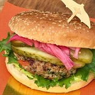
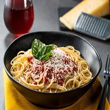

Hamburguesa
Carne.
Bacon.
Verduras.
Queso.
BBQ.
|
-
Cortar el pan por la mitad, untar con mantequilla por dentro
y tostar ligeramente a la plancha. Colocar una base de
lechuga u otras hojas verdes, y una o varias rodajas de
tomate.
-
Calentar a fuego medio-fuerte la plancha, untar ligeramente
con aceite la hamburguesa reposada y cocinar sin tocar
durante 2-3 minutos. Dar la vuelta, poner una loncha o más
de queso, y cocinar unos 3-4 minutos más.
-
Retirar y disponer sobre el tomate. Añadir más beicon u
otros complementos (pepinillos, cebolla caramelizada...),
untar con la salsa elegida la parte superior del pan y
cerrar.
|

|
Empanada
Harina.
Tomate.
Pollo.
Cilantro.
|
-
En un sartén con aceite sofríe la cebolla a fuego medio
durante 5 minutos, luego agrega los tomates, cebolla larga,
ajo, pimentón, cilantro, sal y pimienta negra y cocina por
15 minutos. Incorpora la carne y revuelve constantemente
hasta mezclar todos los ingredientes.
-
Cuando esté lista la carne retira del fuego y agrega el puré
de papas, mezcla hasta logra una textura homogénea. Con la
ayuda del plástico, dobla el círculo de la masa a la mitad
para formar una media luna, sella el borde con un tenedor o
con los dedos y luego corta con una taza pequeña.
-
Repite este proceso con todas las empanadas. Coloca una olla
con aceite a calendar a fuego medio a 360 ° F, cuando el
aceite esté caliente agrega 3 o 4 empanadas y deja freír
hasta que se doren por todos los lados.
|
|
Pastas
Carne.
Cebolla.
Zanahoria.
Apio.
Tomate.
|
-
Comenzamos picando en trozos muy pequeños las zanahorias, el
apio y el diente de ajo. La cebolla también la cortamos en
brunoise muy fino, de forma que todas las hortalizas tengan
así un tamaño similar al de la carne, para que no destaquen
sobre ella.
-
Las pochamos con aceite de oliva durante diez minutos a
fuego lento. Añadimos la carne picada. Cuando la carne
picada haya cambiado de color, agregamos el vino blanco y
dejamos que se evapore mientras removemos.
-
Después agregamos el tomate picado en trozos un vaso de agua
y el concentrado de tomate, dejando que todo se cocine
durante unos veinte minutos más.
|

|